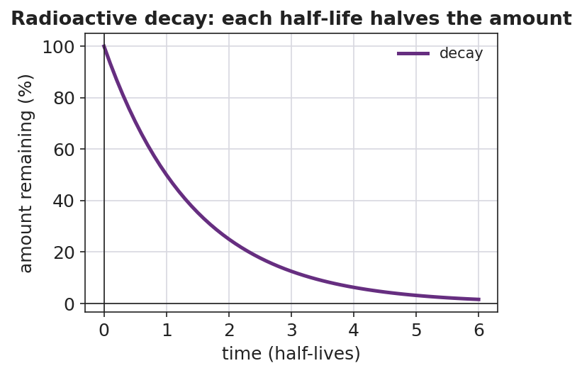

01 Phenomenon
An old wooden tool is dug up from a 5,000-year-old tomb. There is no date written on it anywhere — no receipt, no witness. Yet a laboratory can state its age to within about a century. Every living thing absorbs a steady amount of radioactive carbon-14 while alive. The moment it dies, the intake stops and the carbon-14 begins to decay at a fixed rate. By measuring how much carbon-14 is left compared to a fresh sample, a scientist can count backward to the moment the organism died.
02 Driving question
How can we use radioactive isotopes to date a 5,000-year-old artifact?
03 Notice & wonder
Your teacher poured out 100 heads-up pennies (decaying carbon-14 atoms), removed every penny that landed tails, and called that one “half-life.” Record what you saw.
| I notice… | I wonder… |
|---|---|
Turn & Talk #1: Your teacher started with 100 pennies and about half decayed each shake. What if they had started with 400 pennies, or just 8 pennies? Would the fraction that decays each shake be different? In one sentence, predict and explain.
04 Initial model
Before your teacher names anything: suppose decay were PERFECT and exactly half of the sample decayed every “toss.” Starting from 100 atoms, fill in the table. Then write the fraction of the original that remains, using a fraction with a 2-based denominator.
| Toss # (half-lives) | Atoms remaining | Fraction of original remaining |
|---|---|---|
| 0 | 100 | 1/1 |
| 1 | ||
| 2 | ||
| 3 | ||
| 4 |
What pattern connects the toss number to the fraction remaining? _______________________________________________
Write the fraction remaining after toss 3 as a power of one-half: ( ___ )^___ = _______
How does your table compare to the decay curve your teacher projected? _______________________________________________
05 Investigate
Part 1 — The penny (or M&M) simulation
At your group’s vertical surface, pour out 100 pennies. Every penny showing TAILS has decayed — set those aside and count the pennies that REMAIN. Pour only the remaining pennies again, remove tails again, and record. Repeat until 3 or fewer remain.
| Toss # | Pennies remaining |
|---|---|
| 0 | 100 |
| 1 | |
| 2 | |
| 3 | |
| 4 | |
| 5 |
About what fraction of the pennies disappears each toss? _______________
Your real data is not exactly half each toss. Why not? What would make it closer to a perfect halving? _______________________________________________
Part 2 — From half-lives to TIME (carbon-14, half-life = 5,730 years)
A “toss” in the simulation is one half-life. For carbon-14, one half-life is 5,730 years. Use these three relationships:
- number of half-lives = total time ÷ half-life
- fraction remaining = (1/2) raised to the number of half-lives
- total time = number of half-lives × half-life
Problem A: A lab measures that an artifact has 1/4 of the carbon-14 of a fresh sample.
How many half-lives have passed? _______________
How old is the artifact? Show your work.
Problem B: A sample has gone through 3 half-lives of carbon-14.
What fraction of its carbon-14 remains? _______________
How much time has passed? Show your work.
Part 3 — A different isotope (iodine-131, half-life ≈ 8 days)
Iodine-131 is used in medicine. Its half-life is about 8 days. A hospital sample sits for 24 days.
How many half-lives is that? (Hint: divide.) _______________
What fraction of the original I-131 remains? _______________
Part 4 — Reading the decay curve
Look at figures/half_life_decay_curve.png:

What percent of the sample remains after 3 half-lives? _______________
After how many half-lives is less than 10% of the sample left? _______________
The curve gets closer and closer to the x-axis but never touches it. What does that tell you about whether a radioactive sample ever fully disappears?
06 Make it make sense
Solve each problem. Show the number of half-lives and the fraction or time. These use carbon-14 (5,730 years) and iodine-131 (8 days) — the same isotopes from the Investigation.
1. An artifact has 1/8 of the carbon-14 of a fresh sample. (a) Number of half-lives: _______ (b) Age of the artifact (show work): _______________
2. A carbon-14 sample has gone through 2 half-lives. (a) Fraction remaining: _______ (b) Time elapsed (show work): _______________
3. An iodine-131 sample (half-life 8 days) sits for 32 days. (a) Number of half-lives: _______ (b) Fraction of I-131 remaining: _______________
07 Key vocabulary
- half-life
- the fixed time required for exactly one half of a radioactive sample to decay; it is a constant for each radioisotope (listed on Reference Table N) and is unaffected by amount, temperature, or pressure; after n half-lives the fraction remaining is (1/2)ⁿ
- radioactive decay
- the process by which an unstable nucleus breaks down over time and releases radiation; half-life is the rate of this process expressed as a time
- radioisotope
- a version of an element with an unstable nucleus that undergoes radioactive decay; each radioisotope (e.g., carbon-14, iodine-131, uranium-238) has its own characteristic half-life listed on Reference Table N
Use each term in a sentence about today’s investigation. Do not copy the definition — describe something you actually did or observed.
half-life: _______________________________________________ _______________________________________________
radioactive decay: _______________________________________________ _______________________________________________
radioisotope: _______________________________________________ _______________________________________________
08 Revise your model
Return to your Initial Model (the ideal halving table). Add vocabulary labels:
Label each toss in your table with the words “one half-life.”
Above the fraction column, write the rule: fraction remaining = (1/2) ^ (___________). What goes in the blank? _______________
Then finish this Because / But / So sentence:
A scientist can date a 5,000-year-old artifact even though no one wrote down when it was made because __________________________________________, but __________________________________________, so __________________________________________.
09 Exit ticket
(a) Phosphorus-32 has a half-life of about 14 days (Reference Table N). A sample sits for 42 days. How many half-lives have passed, and what fraction of the original P-32 remains? Show your work.
Number of half-lives: _______________ Fraction remaining: _______________ Work: _______________________________________________
(b) Potassium-37 has a half-life of about 1.2 seconds. After 6 seconds (about 5 half-lives), what fraction of the original K-37 remains? Show your work.
Fraction remaining: _______________ Work: _______________________________________________
(c) In one sentence, explain why the same fraction of a radioactive sample decays in each half-life, no matter how much sample you start with.
10 Explore further
- Penny (or M&M) half-life simulation: Each group starts with 100 pennies (or M&Ms) representing radioactive atoms. Shake and pour them out; every penny showing tails (or every M&M showing the printed "m") has "decayed" and is removed. Record the number remaining after each toss. Each toss is one half-life. Groups plot remaining-count vs. number of tosses and compare their curve to `figures/half_life_decay_curve.png`. The simulation makes the fixed-fraction pattern tangible: roughly half disappear every round, regardless of how many you started with.
- Carbon-14 dating problems: Using the half-life of C-14 (5,730 years) from Reference Table N, students solve for the age of artifacts given the fraction of C-14 remaining (1/2, 1/4, 1/8). This is the direct application of the simulation to the anchoring phenomenon.
- Decay-curve reading: Students read and interpret `figures/half_life_decay_curve.png` to answer: what percent remains after 3 half-lives? After how many half-lives is less than 10% left? Connect the smooth curve to the discrete penny data.